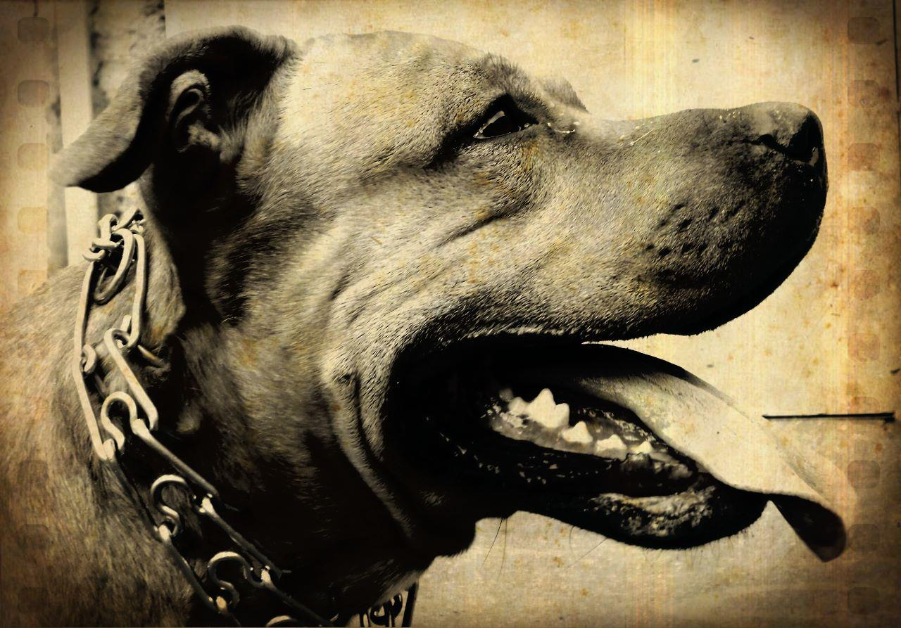

About Me

Hello my name is Buster. I am 9.5 year old. I was born in 2010 on 21th of October.
Shocking fact: My weight is more than 40kg.
I love to eat, play with tennis ball and plastic bottles, sleep and pee :P. My favourite food is meat and pasta, which I eat very rare as, unfortunately, it is not very good for my health.
Some facts about Pit bulls
Pit bull is the common name for a type of dog descended from bulldogs and terriers. The pit bull-type is particularly ambiguous, as it encompasses a range of pedigree breeds, informal types and appearances that cannot be reliably identified. Formal breeds often considered to be of the pit bull-type include the American Pit Bull Terrier, American Staffordshire Terrier, American Bully, and Staffordshire Bull Terrier.
My Anchestors' History
Until the mid-19th century the now extinct Old English Terriers and Old English Bulldogs were bred together to produce a dog that combined the gameness of the terrier with the strength and athleticism of the bulldog. This type of dog, which was bred in the British Isles, became known as the bull and terrier. They arrived in the United States in the late nineteenth century where they became the direct ancestors of the American Pit Bull Terrier. In the United Kingdom, Bull-and-terriers were used in bloodsports such as bull baiting and bear baiting. These bloodsports were officially eliminated in 1835 when Britain introduced animal welfare laws. Since dog fightings are cheaper to organize and far easier to conceal from the law than bull or bear baits, bloodsport proponents turned to pitting their dogs against each other instead. Dog fighting was used as both a bloodsport (often involving gambling) and a way to continue to test the quality of their stock. For decades afterwards, dog fighting clandestinely took place in small areas of Britain. These dogs arrived in America around 1845 to 1860, where the dog fighting practice had continuity and a new American dog breed arrived. In February 10, 1898 the breed was recognized by the United Kennel Club (UKC) named as American Pit Bull Terrier. For some time in the early part of the 20th century the UKC began to register the breed name with the word "pit" in parentheses (American (Pit) Bull Terrier), to facilitate public acceptance as American Bull Terrier. But this lasted a short time and returned to the previous form. In the early 20th century, pit bulls were used as catch dogs in America for semi-wild cattle and hogs, to hunt hogs, and drive livestock, and as family companions. But the dog fighting remained the main use of the breed until 1976 when it was outlawed in all states. Pit Bull Terriers successfully fill the role of companion dogs, working dogs, athletic sport dogs (Weight pulling, French Ring Sport, Top Dog), and police dogs, and therapy dog. Pit Bull Terriers also constitute the majority of dogs used for illegal dog fighting in America. In addition, law enforcement organizations report these dogs are used for other nefarious purposes, such as guarding illegal narcotics operations, use against police, and as attack dogs.